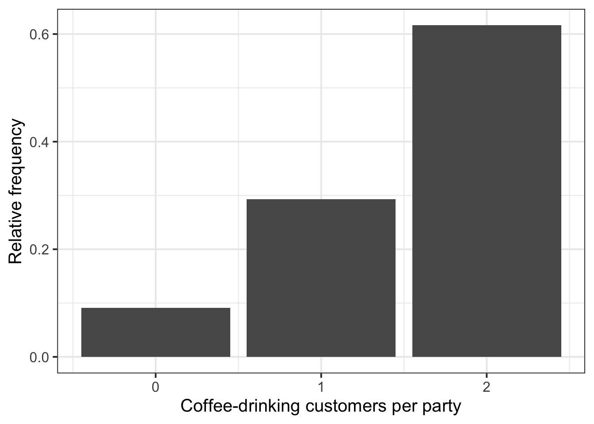
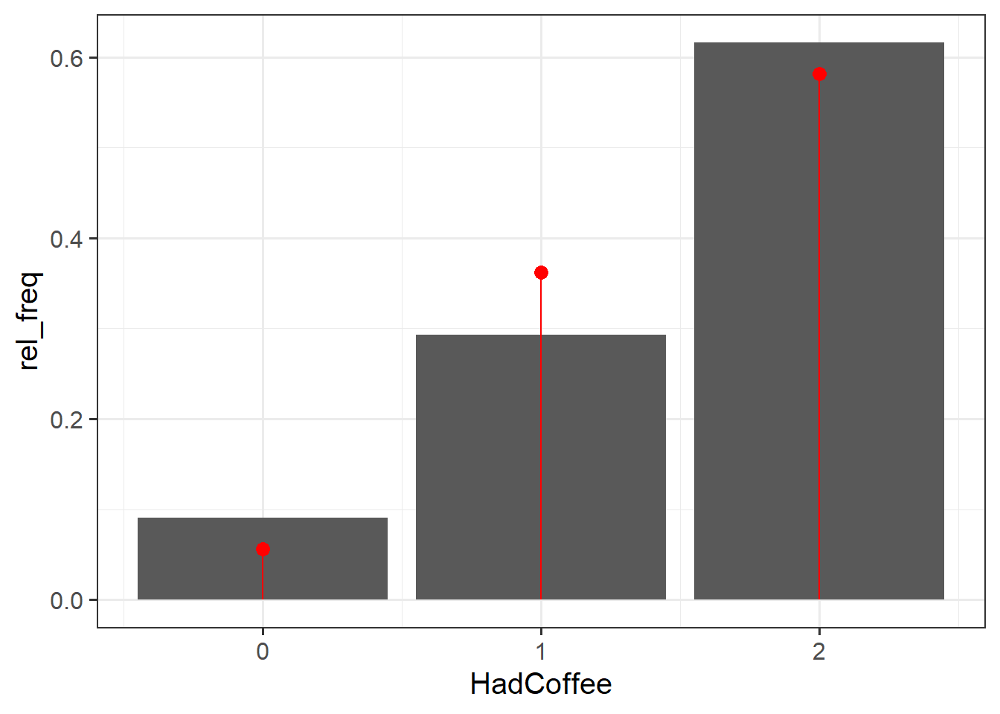

| Variable Name | Description |
|---|---|
| Bill | Size of the bill (in dollars) |
| Tip | Size of the tip (in dollars) |
| Credit | Paid with a credit card? n or y |
| Guests | Number of people in the group |
| Day | Day of the week: m=Monday, t=Tuesday, w=Wednesday, th=Thursday, or f=Friday |
| Server | Code for specific waiter/waitress: A, B, or C |
| PctTip | Tip as a percentage of the bill |
| HadCoffee | Number of guests in the group who had coffee |
| IQ1 | Score on IQ test for guest 1 |
| IQ2 | Score on IQ test for guest 2 |
Random Variables (Discrete)
Semester 1 - Week 9
Instructions Recap - Formative Report B
In this block of the course (weeks 7-11), you should produce a PDF report using Rmarkdown for which you will receive formative feedback in week 12.
The report should not include any reference to R code or functions, but be written or a generic reader who is only assumed to have a basic statistical understanding without any R knowledge. You should also avoid any R code output or printout in the PDF file.
You will be required to submit a PDF file by 12 noon on Friday the 2nd of December 2022 via Learn. One person needs to submit on behalf of your group.
-
The report should be at most 6 pages long. At the end of the report, you are allowed two appendices which both don’t count towards the page limit.
- Appendix A will contain any tables or figures which you cannot fit in the page limit (no text allowed)
- Appendix B will contain the code to reproduce the report results (just like Formative Report A).
No extensions allowed. As this is group-based work, no extensions are possible.
Formative report B - Data
Hollywood Movies. At the link https://uoepsy.github.io/data/hollywood_movies_subset.csv you will find data on Hollywood movies released between 2012 and 2018 from the top 5 lead studios and top 10 genres. The following variables were recorded:
-
Movie: Title of the movie -
LeadStudio: Primary U.S. distributor of the movie -
RottenTomatoes: Rotten Tomatoes rating (critics) -
AudienceScore: Audience rating (via Rotten Tomatoes) -
Genre: One of Action Adventure, Black Comedy, Comedy, Concert, Documentary, Drama, Horror, Musical, Romantic Comedy, Thriller, or Western -
TheatersOpenWeek: Number of screens for opening weekend -
OpeningWeekend: Opening weekend gross (in millions) -
BOAvgOpenWeekend: Average box office income per theater, opening weekend -
Budget: Production budget (in millions) -
DomesticGross: Gross income for domestic (U.S.) viewers (in millions) -
WorldGross: Gross income for all viewers (in millions) -
ForeignGross: Gross income for foreign viewers (in millions) -
Profitability: WorldGross as a percentage of Budget -
OpenProfit: Percentage of budget recovered on opening weekend -
Year: Year the movie was released -
IQ1-IQ50: IQ score of each of 50 audience raters (every movie had different raters) -
Snacks: How many of the 50 audience raters brought snacks -
PrivateTransport: How many of the 50 audience raters reached the cinema via private transportation
1 Tasks
For formative report B, you will be asked to perform the following tasks, each related to a week of teaching in this course.
This week you will only focus on task B3.
B1) Create and summarise categorical variables, before calculating probabilities.
B2) Investigate if events are independent, and compute probabilities.
This week’s task
B3) Computing and plotting probabilities with a binomial distribution.
B4) Computing and plotting probabilities with a normal distribution.
B5) Plot standard error of the mean, and finish the report write-up (i.e., knit to PDF, and submit the PDF for formative feedback).
2 B3 sub-tasks
Tip
To see the hints, hover your cursor on the superscript numbers.
Important
Focus on completing all of the lab tasks, and leave non-essential things like changing colors for later.
If, after looking at the hint, you still have no clue on how to answer a question, check the worked example below!
In this section you will find some guided sub-steps you may want to consider to complete task B3.
A new movie theatre is opening in Texas, and the management team are reviewing the requirements for snack stalls and their car parking capacity. They are interested in determining whether to have only one or multiple snack stalls selling popular food and drink items; and are considering whether to expand their car park size or introduce a bus stop on cinema grounds.
A recent survey suggested that 49% of movie viewers always buy some form of snack item (i.e., popcorn, drinks, sweets) when watching a movie, and another suggested that 70% of movie viewers travel to the cinema via private transport.
In this lab, you will need to consider both the Snacks and Private Transport variables from the Hollywood movies dataset when answering the questions below.
- Reopen last week’s Rmd file, and continue building on last week’s work. Make sure you are still using the movies dataset filtered to only include the top 3 genres.1
Consider the
SnacksandPrivate Transportvariables, are they discrete or continuous?Plot separately the sample frequency distribution of both the
SnacksandPrivate Transportvariables with barplots.2
- What kind of distribution do these follow? Estimate the parameters of your two distributions from the sample data.3
- Plot the fitted Binomial distribution on top of the sample frequency distribution for each variable. Is the Binomial distribution a good model for each variable?4
- What is the probability that exactly half of the audience for each movie (i.e., 25 viewers) bought snacks? What is the probability that exactly half traveled via private transport?5
- What is the probability that more than half of the audience for each movie (i.e., >25 viewers) bought snacks? What is the probability that less than half of the audience for each movie (i.e., <25 viewers) traveled via private transport?6
Based on the probabilities you have reported above, do you think that the new movie theatre should (1) invest in multiple snack stations, or just one; and (2) increase car parking capacity or add a bus stop? Justify your answer.
Are your two estimates consistent with the survey-reported values?7
- In the analysis section of your report, write up a summary of what you have reported above, using proper rounding to 2 decimal places and avoiding any reference to R code or functions.
3 Worked Example
The dataset available at https://uoepsy.github.io/data/RestaurantTips2.csv was collected by the owner of a US bistro, and contains 99 observations on 10 variables. It is a subset of the RestaurantTips.csv data presented in the past weeks, focusing only on parties of 2 people.8
The bistro owner is interested in coffee sales, and whether they should consider introducing a 2 for 1 coffee deal to entice customers to purchase one of their Christmas coffees. Another option they are considering is starting a loyalty scheme for customers to be rewarded for every coffee purchase. Your job is to advise them on which scheme they should run to benefit most customers.
For context, Americans drink a lot of coffee, but slightly less than Norwegians (89.4% of Norwegians drink at least one coffee per day!9). We are interested in estimating the probability that an adult American will drink coffee.
library(tidyverse)
tips2 <- read_csv("https://uoepsy.github.io/data/RestaurantTips2.csv")
head(tips2)# A tibble: 6 × 10
Bill Tip Credit Guests Day Server PctTip HadCoffee IQ1 IQ2
<dbl> <dbl> <chr> <dbl> <chr> <chr> <dbl> <dbl> <dbl> <dbl>
1 23.7 10 n 2 f A 42.2 2 93 100
2 32.0 5.01 y 2 f A 15.7 2 96 98
3 17.4 3.61 y 2 f B 20.8 2 94 99
4 15.4 3 n 2 f B 19.5 2 99 108
5 18.6 2.5 n 2 f A 13.4 2 129 106
6 21.6 3.44 n 2 f B 16 2 82 118- If we were asked to describe what kind of variable
HadCoffeeis, and to comment on the kind of probability distribution it may follow, we could say:
The number of coffee-consuming guests out of parties of size 2 is a discrete random variable that could be modeled by a Binomial probability distribution.
- We can plot the frequency distribution of the
HadCoffeevariable in the sample as following:
Compute the frequency distribution and relative frequency:
freq_distr <- tips2 %>%
count(HadCoffee) %>%
mutate(rel_freq = n / sum(n)) %>%
rename(freq = n) # rename(new_name = current_name)
# this renames column 'n' to 'freq'
freq_distr# A tibble: 3 × 3
HadCoffee freq rel_freq
<dbl> <int> <dbl>
1 0 9 0.0909
2 1 29 0.293
3 2 61 0.616 Plot the frequency distribution using a barplot:
geom_col() is used to create a barplot when you have already computed the bar heights, i.e. the frequency table.
geom_bar() takes the original data, and does the counting for you.
ggplot(freq_distr, aes(x = HadCoffee, y = rel_freq)) +
geom_col() +
labs(x = "Coffee-drinking customers per party",
y = "Relative frequency")
Fitting a distribution
Fitting a Binomial distribution to data involves estimating the parameters of the distribution from the data. In other words, we want to find values for \(n\) and \(p\) from the variable HadCoffee in the our data.
-
We can now fit a Binomial distribution to the variable. To do so, we need to start by estimating the parameters of the Binomial distribution:
- \(n\), the number of trials (or size)
- \(p\), the probability of success
For this dataset, \(n\) represents the size of each party, i.e. \(n = 2\). The discrete variable HadCoffee represents how many guests had coffee, out of the 2 possible guests per party.
In a Binomial distribution, the number of trials (\(n\)) should not be confused with the sample size. The sample size would be the total number of parties in the dataset, i.e. 99. It’s just unfortunate that both use the same symbol \(n\), but which one is the correct one should be clear from the context.
The event “had coffee” represents our “success”, and \(p\) denotes the probability of success. In other words, \(p\) represents the probability of an individual having coffee.
Estimating the probability of success
The expected value \(E(X)\) of a Binomial distribution (i.e., the mean) is \(E(X) = n * p\) where \(n\) = number of trials = size, and \(p\) is the probability of success. From this, we have that \(p = E(X) / n\).
We typically denote the estimated probability of success from the sample data with a hat on top, \(\hat{p}\), written in text as $\hat{p}$.
# The mean of the discrete random variable
EX <- mean(tips2$HadCoffee)
# Each party size (n in the formula)
size <- 2
# Estimated probability of having coffee: E(X) / n
p_hat <- EX / size
#check value
p_hat[1] 0.7626263- We can then compare the sample frequency distribution to the Binomial distribution, and comment on whether the Binomial fit is good:
We can create a new tibble having two columns. The first has the possible values of the Binomial distribution (0, 1, or 2 guests ordering coffee out of the 2). The second column has the theoretical probabilities, for each of the possible values, predicted by the Binomial distribution with parameters \(n = 2\) and \(p = 0.76\).
binom_distr <- tibble(
HadCoffee = 0:2,
binom_prob = dbinom(x = HadCoffee, size = 2, prob = p_hat)
)
binom_distr# A tibble: 3 × 2
HadCoffee binom_prob
<int> <dbl>
1 0 0.0563
2 1 0.362
3 2 0.582 We can plot the sample frequency distribution as a bar plot and put on top the fitted Binomial probability distribution as dots (see Option 1), and even add segments to show the Binomial distribution (see Option 2).
ggplot() +
geom_col(data = freq_distr, aes(x = HadCoffee, y = rel_freq)) +
geom_point(data = binom_distr,
aes(x = HadCoffee, y = binom_prob), # adds points
colour = 'red', size = 3)
ggplot() +
geom_col(data = freq_distr, aes(x = HadCoffee, y = rel_freq)) +
geom_point(data = binom_distr,
aes(x = HadCoffee, y = binom_prob), # adds points
colour = 'red', size = 3) +
geom_segment(data = binom_distr,
aes(x = HadCoffee, y = binom_prob, # adds line (optional)
xend = HadCoffee, yend = 0), # from (x,y) to (xend,yend)
colour = 'red')
The Binomial distribution seems to be a good fit for the sample distribution, as the probabilities tend to agree. Among all parties of two guests, the highest probability is that both guests had coffee, and no one having coffee has the lowest probability.
Probability Mass Function
-
\(P(X = x)\) =
dbinom(x, size, prob)
The probability mass function computes \(P(X = x)\) for a Binomial distribution where number of trials is size and probability of success is prob.
- To calculate the probability that 1 person in the party orders coffee, we can compute the following:
The probability P(X = 1) for a Binomial with \(x = 1\), \(size = 2\), and \(p = 0.76\) is:
dbinom(1, size = 2, prob = p_hat)[1] 0.3620549- To calculate the probability that 2 people in the party order coffee, we can compute the following:
The probability P(X = 2) for a Binomial with \(x = 2\), \(size = 2\), and \(p = 0.76\) is:
dbinom(2, size = 2, prob = p_hat)[1] 0.5815988
Cumulative Distribution Function
-
\(P(X \leq q)\) =
pbinom(q, size, prob)
The cumulative distribution function \(P(X \leq q)\) gives the probability of having less than or equal to \(q\) successes.
From the total probability rule, the probability of a value being greater than \(q\) is computed as \(P(X > q) = 1 - P(X \leq q)\):
# option 1: P(X > q) = 1 - P(X <= q)
1 - pbinom(q, size, prob)# option 2: P(X > q) directly
pbinom(q, size, prob, lower.tail = FALSE)- To calculate the probability that 1 person or less orders coffee, we can compute the following:
We do this with the pbinom(q, size, prob) function, with q = 1 to have \(P(X \leq 1) = P(X = 0) + P(X = 1)\):
pbinom(1, size = 2, prob = p_hat)[1] 0.4184012You can also see this by creating a new column in the binomial distribution which has the cumulative sums of the probabilities, i.e. the values P(X = 0), followed by P(X = 0) + P(X = 1), and finally by P(X = 0) + P(X = 1) + P(X = 2):
# A tibble: 3 × 3
HadCoffee binom_prob cumul_prob
<int> <dbl> <dbl>
1 0 0.0563 0.0563
2 1 0.362 0.418
3 2 0.582 1 As you can see, P(X = 0) + P(X = 1) is 0.42 in the second row, which agrees with the result computed using pbinom above.
- To calculate the probability that at least one person from the group orders coffee, we can compute one of the below four equivalent calucaltions:
1 - pbinom(0, size = 2, prob = p_hat)[1] 0.9436537pbinom(0, size = 2, prob = p_hat, lower.tail = FALSE)[1] 0.9436537# 1 - P(X = 0)
# As the total probability is 1, we can get it as 1 - P(0 guests have coffee).
# This follows from the total probability rule
1 - dbinom(0, size = 2, prob = p_hat)[1] 0.9436537- To check whether our estimated probability of drinking coffee consistent with the one reported by a recent YouGov survey, which reported that three quarters of adult Americans drink coffee, we can take a look at our estimated \(\hat{p}\). We can also then comment on whether adult Americans are more or less likely to drink coffee than Norwegians?
# YouGov reported probability
p_survey <- 3/4
p_survey[1] 0.75# Our estimate
p_hat[1] 0.7626263The estimated probability of drinking coffee, based on the data from a US bistro, is 0.76. This is relatively close to the YouGov reported result of 0.75. The small deviation may be due to sampling variability, due to having chosen a different sample of people from the one that were considered in this bistro.
According to a recent survey, 89.4% of Norwegians drink at least one coffee per day10 As such, while adult Americans drink lots of coffee, an adult American is less likely to drink coffee than a Norwegian.
Example writeup
Figure 1 displays the distribution of coffee-drinking customers in two-party tables, with a Binomial fit superimposed as red dots. Both party guests are more likely to both drink coffee (0.58) than not (0.06). The probability of only one guest drinking coffee is 0.36. As such, the probability of at least one guest drinking coffee is 0.94. The owner of the bistro should not consider running a 2 for 1 offer on Christmas coffees, as they would lose out on income. It is most likely that groups of two customers will already buy two coffees when they visit the bistro (0.58). Instead, the owner might want to offer a loyalty scheme to reward customers for purchasing coffees, regardless of the quantity, as this will also reward parties of two where only one person purchases a coffee.
4 Student Glossary
To conclude the lab, add the new functions to the glossary of R functions.
| Function | Use and package |
|---|---|
rename() |
? |
dbinom() |
? |
pbinom() |
? |
geom_col() |
? |
geom_point() |
? |
geom_segment() |
? |
cumsum() |
? |
References
Lock, Robin H, Patti Frazer Lock, Kari Lock Morgan, Eric F Lock, and Dennis F Lock. 2020. Statistics: Unlocking the Power of Data. John Wiley & Sons.
Footnotes
Hint: Ask last week’s driver for the Rmd file, they should share it with the group via email or Teams. To download the file from the server, go to the RStudio Files pane, tick the box next to the Rmd file, and select More > Export.↩︎
-
Hint:
First compute the frequency distribution of each variable, using
count()andmutate().Next, plot each frequency distribution as a barplot. Since you already have the bar heights, use
geom_col()to create the bars.Warning: The function
geom_bar(), instead, does the counting for you and uses the data set instead of the frequency table.↩︎ -
Hint: A Binomial distribution has two parameters, the number of trials or size (\(n\)) and the probability of success (\(p\)).
To estimate the size, use the information from the study design.
To estimate the probability of success use the following fact. The expected value \(E(X)\) of a Binomial distribution (i.e., the mean) is \(E(X) = n * p\) where \(n\) = number of trials = size, and \(p\) is the probability of success. From this, we have that \(p = E(X) / n\). In your movies sample data, the number of trials (size) is 50, as you have the number of people that bought snacks or travelled via private transport out of the 50 movie raters.↩︎
-
First, create a new tibble with two columns: (1) the possible values of the Binomial distribution, and (2) the probabilities of each outcome.
Next, take the barplots previously created and use
geom_point(data = ?, aes(x = ?, y = ?))to add the Binomial probabilities on top of each barplot.If the plot looks weird, are your bar heights probabilities or counts? The Binomial probabilities are, as the words says, probabilities so make sure you plot two relatable measures.↩︎
-
Hint: Here we need to use the function
dbinom(), as we are interested in the probability of getting one specific result.The function
dbinom()will require you to state three arguments: (1) x - the value(s) you want to compute the probability for, (2) size - the number of trials, and (3) prob - the probability of success.
↩︎dbinom(x = ?, size = ?, prob = ?) -
Hint: Here we need to use the function
pbinom(), as we are interested in the cumulative probability of getting a specific result.The function
pbinom()will require you to state four arguments: (1) q - the number of ‘successful’ outcomes, (2) size - the number of trials, (3) prob - the probability of success, and (4) lower.tail - specify which side of the probability distribution to test from, where TRUE if looking for ‘<=’, or FALSE if ‘>’.
↩︎pbinom(q = ?, size = ?, prob = ..., lower.tail=FALSE) Hint: Compare your estimated probability of buying snacks to that reported in the above survey (which suggested that 49% of movie viewers always buy some form of snack item (i.e., popcorn, drinks, sweets) when watching a movie); and compare your estimated probability of travelling via private transportation to that reported in the above survey (which suggested that 70% of movie viewers viewers travel to the cinema via private transport).↩︎
Tverdal, A., Hjellvik, V. & Selmer, R. Coffee intake and oral–oesophageal cancer: follow-up of 389,624 Norwegian men and women 40–45 years. Br J Cancer 105, 157–161 (2011).↩︎
Tverdal, A., Hjellvik, V. & Selmer, R. Coffee intake and oral–oesophageal cancer: follow-up of 389,624 Norwegian men and women 40–45 years. Br J Cancer 105, 157–161 (2011).↩︎